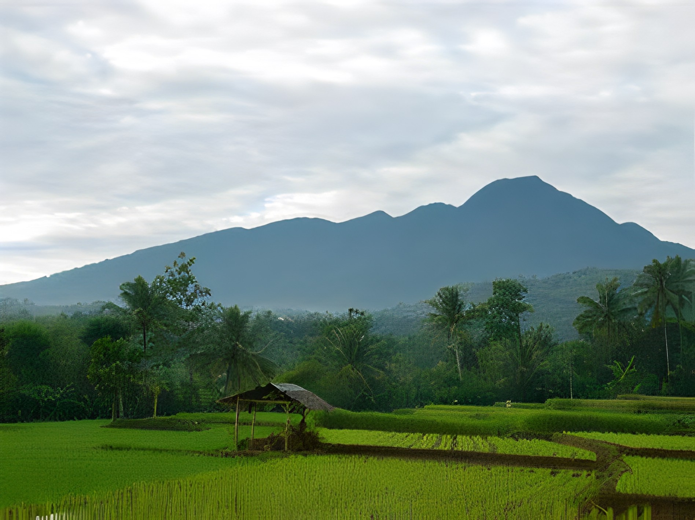
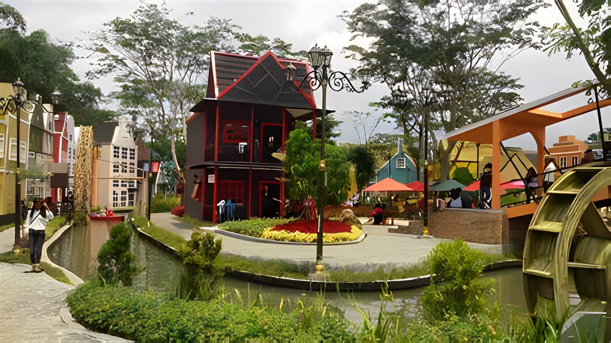
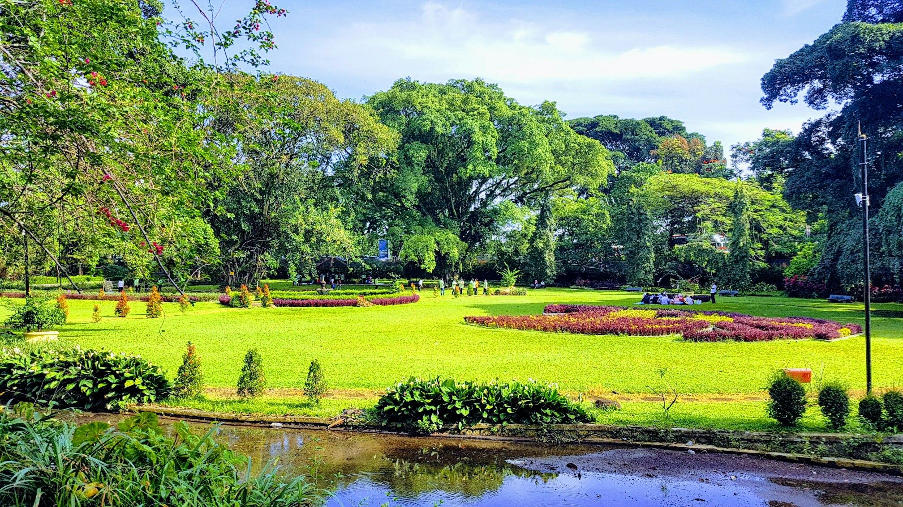

Pada awal abad ke-5 Masehi, Kota Bogor merupakan pusat Kerajaan Tarumanagara dengan raja yang
bernama Purnawarman Beberapa kerajaan lainnya lalu memilih untuk bermukim di tempat yang
sama dikarenakan daerah pegunungannya yang secara alamiah membuat lokasi ini mudah untuk
bertahan terhadap ancaman serangan, dan di saat yang sama adalah daerah yang subur serta
memiliki akses yang mudah pada sentra-sentra perdagangan saat itu.
Berdasarkan filosofi Sunda, kata Bandung juga berasal dari kalimat Nga-Bandung-an Banda Indung,
yang
merupakan
kalimat sakral dan luhur karena mengandung nilai ajaran Sunda. Nga-Bandung-an artinya
menyaksikan
atau
bersaksi.
Banda adalah segala sesuatu yang berada di alam hidup yaitu di bumi dan atmosfer, baik makhluk
hidup
maupun
benda
mati. Sinonim dari banda adalah harta. Indung berarti Ibu atau Bumi, disebut juga sebagai Ibu
Pertiwi
tempat
Banda
berada.
Geografis

Secara geografis Kota Bogor terletak di antara 106’ 48’ BT dan 6’ 26’ LS, kedudukan geografis
Kota Bogor di tengah-tengah wilayah Kabupaten Bogor serta lokasinya sangat dekat dengan Ibukota
Negara, merupakan potensi yang strategis bagi perkembangan dan pertumbuhan ekonomi dan jasa,
pusat kegiatan nasional untuk industri, perdagangan, transportasi, komunikasi, dan pariwisata.
Kota Bogor mempunyai rata-rata ketinggian minimum 190 m dan maksimum 330 m dari permukaan laut,
Kondisi iklim di Kota Bogor suhu rata-rata tiap bulan 26’ C dengan suhu terendah 21,8’ C dengan
suhu tertinggi 30,4’ C. Kelembaban udara 70 %, Curah hujan rata-rata setiap tahun sekitar 3.500
– 4000 mm dengan curah hujan terbesar pada bulan Desember dan Januari.
Wisata
Sebagai salah satu tujuan tempat wisata di Jawa Barat, Kota Bogor memang menyimpan banyak sekali
lokasi wisata yang seru dan menyenangkan. Banyak tempat wisata di Bogor yang tak pernah sepi
dengan pengunjung. Mereka yang datang berkunjung ke kota ini sendiri tak hanya berasal dari
kawasan sekitar Bogor saja. Tak sedikit dari mereka yang datang ke Bogor merupakan wisatawan
yang datang dari luar negeri.
Kota Bogor memang merupakan salah satu tempat wisata yang banyak dikunjungi turis asing di
Indonesia. mereka datang ke kota ini, untuk menikmati keindahan wisata yang ada di Kota Hujan
ini. Memang ada banyak sekali ragam jenis destinasi wisata di Bogor yang bisa kita kunjungi,
sebagai destinasi liburan yang menyenangkan.
Devoyage Bogor

Salah satu kawasan wisata Baru yang sedang menjadi viral dan trending topic di media sosial
adalah Devoyager Bogor. Ada juga yang menyebut tempat ini sebagai Kampung Eropa Bogor.
Tempat yang mempunyai luas kurang lebih 1,5 hektar ini menawarkan berbagai macam wisata kekinian
berupa spot selfie dengan bangunan bergaya eropa. Berada di sini bakal membuat semua orang
tertipu, karena bangunannya yang dibangun dengan sangat detail
Bisa di bilang Devoyager adalah tempat yang tepat untuk memenuhi kebutuhan liburan Sobat native.
Berada di tengah kawasan yang sejuk nan teduh. Hadir dengan berbagai macam hiburan berupa gaya
eropa asli. Di tambah dengan hadirnya 150 titik spot foto yang bakal menghabiskan waktu. Serta
berbagai macam menu kuliner nan mantap dan menggoda lidah.
Kebun Raya Bogor

Kebun Raya Bogor atau Kebun Botani Bogor adalah sebuah kebun botani besar yang terletak di Kota
Bogor, Indonesia. Luasnya mencapai 87 hektar dan memiliki 15.000 jenis koleksi pohon dan
tumbuhan.
Saat ini Kebun Raya Bogor ramai dikunjungi sebagai tempat wisata, terutama hari Sabtu dan
Minggu. Tiket masuknya Rp 30.000. Di sekitar Kebun Raya Bogor tersebar pusat-pusat keilmuan
yaitu Herbarium Bogoriense
Kebun Raya Bogor timimitina bagian dina 'samida' (leuweng jienan atawa taman jienan) anu
sahenteuna engges aya tina pamarentah Sri Baduga Maharaja (Prabu Siliwangi, 1474-1513) ti
Kerajaan Sunda, sabagian tertulis jeroo prasasti Batutulis. Leuweng eta ditujuken ajang
kaperluan ngajaga kalestarian lingkungan sabagian tempat ngurus benih-benih kayu anu langka. Di
siai samida eta di jieun pula samida anu sarua di perbatasan Cianjur jeung Bogor (leuweng Ciung
Wanara). Leuweng iye engke diantep saengges Kerajaan Sunda eleh ti Kesultanan Banten, sehingga
Gubernur Jenderal van der Capellen ngabangun imah peristirahatan di salah satu sudutna tina
pertengahan abad kk-18.